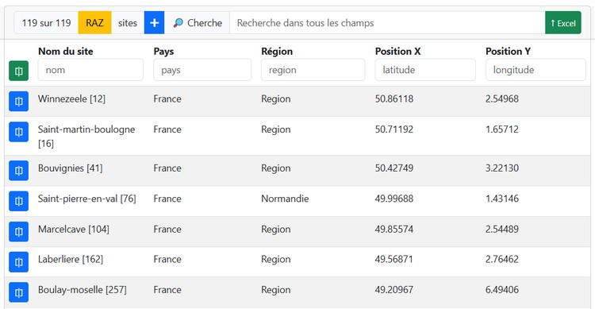
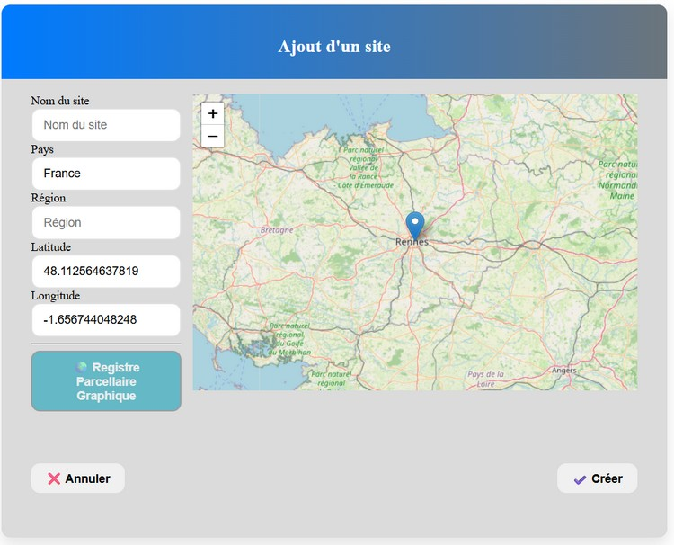
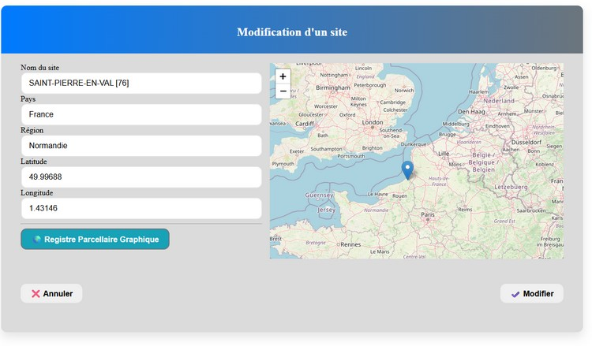

l'écran sites est une liste (structure communes) :
Par page : premet de changer le nombre de lignes sur la page
Le bouton Ajouter permet de créer un ou plusieurs échantillons détaillés dans Ajouter. Le bouton Fichier Excel permet d'importer un fichier Excel afin de créer plusieurs échantillons détaillés dans Importer.
Le champ Cherche : permet d'exécuter une recherche sur tous les champs des échantillons, alors que les cases de recherche sous le nom des colonnes permettent de filtrer les données sur la colonne concernée uniquement.
Le premier bouton de chaque ligne permet d'éditer l'échantillon de la ligne sélectionnée alors que le bouton vert éditera l'intégralité de la sélection en cours.
Le dernier bouton de chaque ligne permet d'imprimer l'étiquette de l'échantillon alors que le bouton ver imprimera toutes les étiquettes de la sélection.
Enfin un menu contextuel est disponible en cliquant dur le bouton droit de la souris permettant de sélectionner des opérations adaptées à la ligne en question.

Ajouter un site permet de créer un site :

Nom du site Nom du site permetant l'identification lors des recherche.
Pays Nom du pays.
Région Région précise la région du site notez que si dans « région » vous saisissez le code postal à 5 ou à 2 chiffres, la région est automatiquement trouvée et le département apparaît sous la souris.
Latitude et Longitude Indique la position au format WGS84 demandé par le e Registre Parcellaire Graphique (RPG), on remarque que tant que les données ne sont pas saisies le bouton RPG n’est pas utilisable et le bouton suivant reste sans effet.
Le bouton Créer permet de créer le site.
Si la longitude et latitude sont saisie l'interrogation du RPG est possible afin de permettre une sélection de site en Amon d'un projet.

Notez que vous pouvez déplacer le jalon sur la carte afin de modifier les données de positions